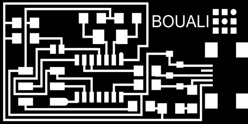
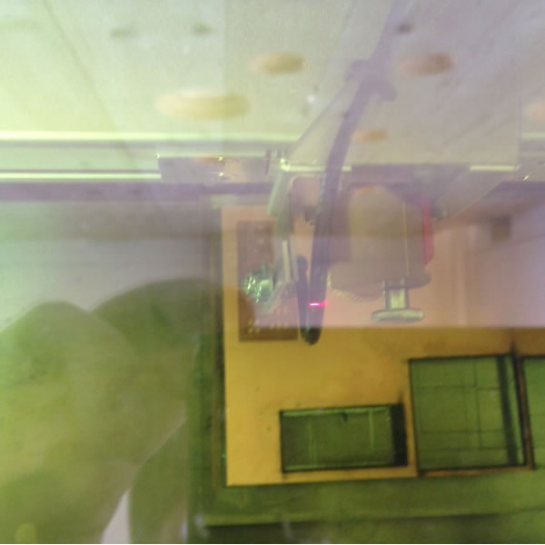
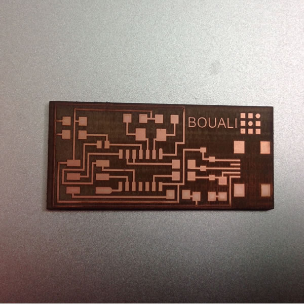

The assignment of this week was to make the FabISP in-circuit programmer.
Even if I had some experience using Arduino and programming electronics, this module represented for me a true challenge. It was the first time I got in touch with electronic production which means starting from the origin by making the board, milling it and then moving to adding electronic components. Of course, I learnt many techniques related to making the board and also to soldering parts. Then after I moved to programming tasks in order the make FabISP in-circuit programmer working.
I downloaded the source files in PNG format from the Fab Academy website, and tried to understand the logic behind the traces designed on it. Then I tried to make some minor changes on the file in order to personalize it by adding my last name. In order to have good resolution of final printed board, I created the vectorial version of my name and added it to the PNG file using GIMP. After saving the modified PNG respecting original resolution, the traces are ready for printing:

Here inside the Opendot FabLab, we have experimented a new technique of printing the board. Thanks to some past experimentation, we managed to use a laser cutter machine to engrave and cut the board more precisely using a FR-1 sheet.
At the Opendot FabLab, we have access to a laser cutter with the capacity to cut two different kinds of laser beams, CO2 and fiber. Therefore, we applied fiber laser to engrave and completely remove copper from the FR-1 surface, and then the C02 laser beams to cut the board. The following is my board after this process:


Step 3: Electronic components soldering:Demostrative steps will be published soon:
Demostrative steps will be published soon:
The file is available for downloand here: